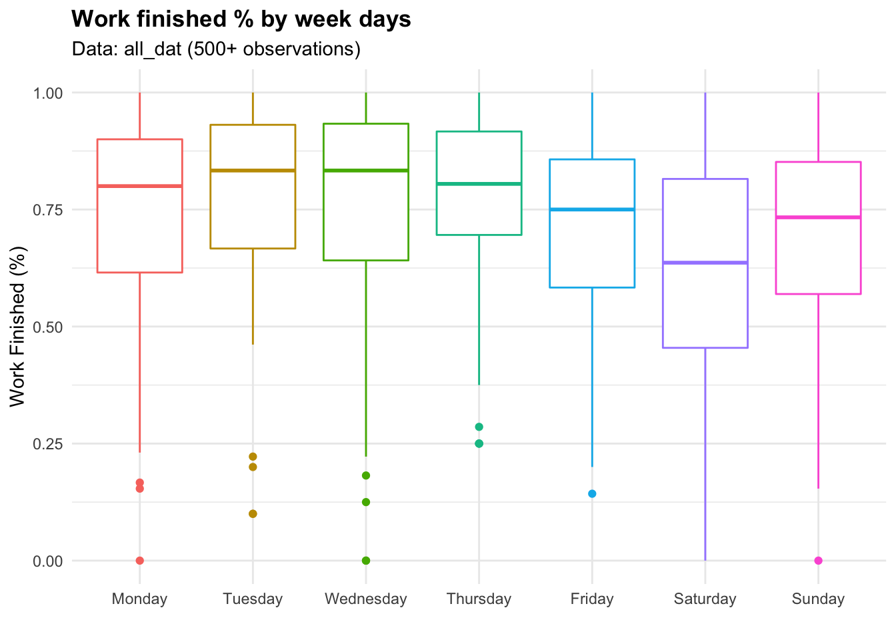
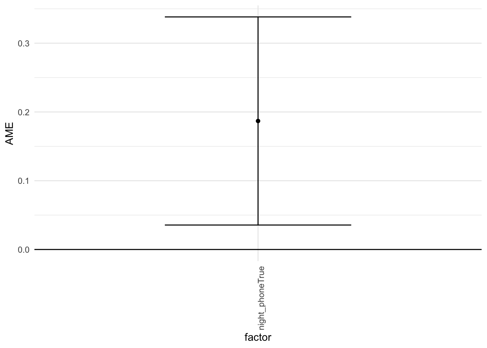
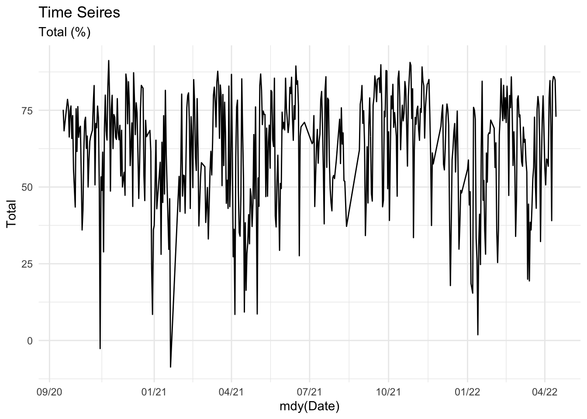
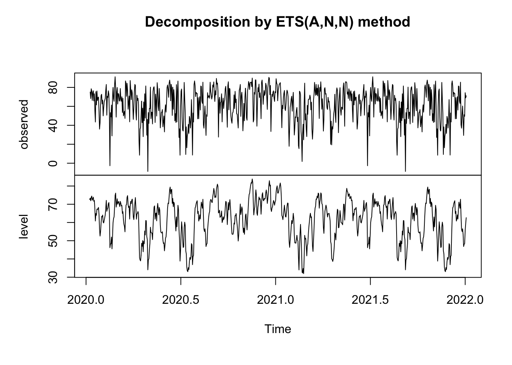
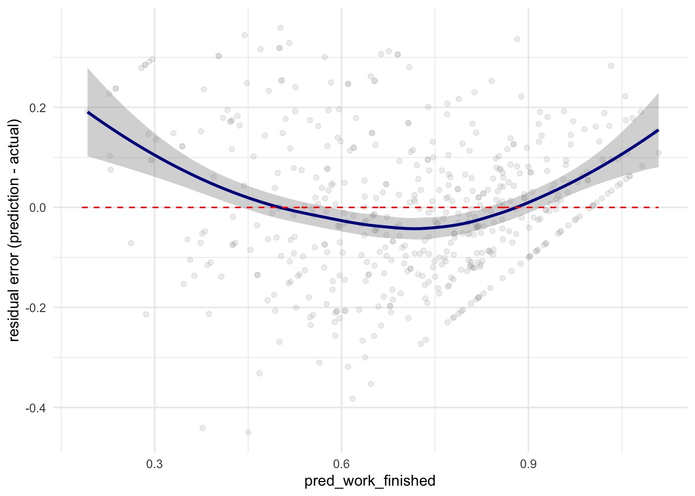

library(lubridate)
library(gridExtra)
library(tidyverse)
library(margins)
library(psych)
Read & Organize Data
all_dat = read.csv('/Volumes/Programming/Spring 2022/project/all_dat.csv')
# all_dat = read.csv('D:/Spring 2022/Project/all_dat.csv')
morning_rt = read.csv('/Volumes/Programming/Spring 2022/Project/morning_routine.csv')
colnames(all_dat) <- c('X', 'Name','Finished','Multiple','Phone_pickups',
'Screen_time','Created','Date','Drink','Key_words',
'Meditation','Mentality','Satisfaction',
'Reading','Productivity','Rise_time','Run','Social',
'Tech','Total','Total_todo','Work_done')
# Remove unnecessary columns & Modify some columns
all_dat <- all_dat %>%
dplyr::select(Date, everything(), Finished, Total_todo,-X,-Name,-Created, - Work_done) %>%
dplyr::mutate(work_finished = round(Finished/Total_todo,4),
Drink = lag(Drink),
Total = Total*100)%>%
tibble()
# Correct the date format for earlier Dates
all_dat$Date[1:114] = format(mdy(all_dat$Date[1:114]),"%m/%d/%Y")
# Same for morning routine #new
morning_rt <- morning_rt %>%
dplyr::mutate(Date = strptime(as.character(morning_rt$Date), "%m/%d/%Y"),
Date = format(Date, "%m/%d/%Y"),
morning_phone = rise_time_check, # modify column name
night_phone = before_sleep_check) %>%
dplyr::select(Date, everything(), -c(X, level_0, index,
rise_time_check, before_sleep_check)) %>%
tibble()
# merge morning_rt with all_dat
all_morning_rt <- merge(morning_rt, all_dat,by="Date", all.x=T) %>%
dplyr::mutate(Date = mdy(Date),
work_finished_mr_exc =
round((Finished-total_checked)/(Total_todo-6),4)) %>%
# work_finished_mr_exc: this variable excludes morning routine
# tasks for more accurate statistical analysis.
dplyr::select(-c(rise_time_min)) %>% # redundant
dplyr::filter(work_finished_mr_exc <= 1 & work_finished_mr_exc >0) %>%
arrange(desc(Date))
Read & Organize Data: Add School & Weekday Variables
# Break dates
# Fall, Thanksgiving, Christmas, Spring, Summer, etc.
date_breaks <- as.character(format(c(
seq(as.Date('11/25/2020', format = "%m/%d/%Y"), by = "day", length.out = 5),
seq(as.Date('12/17/2020', format = "%m/%d/%Y"), by = "day", length.out = 46),
seq(as.Date('03/23/2021', format = "%m/%d/%Y"), by = "day", length.out = 6),
seq(as.Date('04/23/2021', format = "%m/%d/%Y"), by = "day", length.out = 6),
seq(as.Date('05/19/2021', format = "%m/%d/%Y"), by = "day", length.out = 104),
seq(as.Date('10/11/2021', format = "%m/%d/%Y"), by = "day", length.out = 2),
seq(as.Date('12/21/2021', format = "%m/%d/%Y"), by = "day", length.out = 37),
seq(as.Date('03/14/2022', format = "%m/%d/%Y"), by = "day", length.out = 7)),
"%m/%d/%Y"))
# Semester Quarters
# 1st quarter of the semester
first_q <- c(as.character(format(c(
seq(as.Date('09/01', format = "%m/%d"), by = "day", length.out = 27),
seq(as.Date('02/01', format = "%m/%d"), by = "day", length.out = 27)),"%m/%d")))
# 2nd quarter of the semester
second_q <- c(as.character(format(c(
seq(as.Date('09/28', format = "%m/%d"), by = "day", length.out = 27),
seq(as.Date('02/28', format = "%m/%d"), by = "day", length.out = 27)),"%m/%d")))
# 3rd quarter of the semester
third_q <- c(as.character(format(c(
seq(as.Date('10/25', format = "%m/%d"), by = "day", length.out = 27),
seq(as.Date('03/27', format = "%m/%d"), by = "day", length.out = 27)),"%m/%d")))
# 4th quarter of the semester
fourth_q <- c(as.character(format(c(
seq(as.Date('11/21', format = "%m/%d"), by = "day", length.out = 26),
seq(as.Date('04/23', format = "%m/%d"), by = "day", length.out = 27)),"%m/%d")))
# Create School variable
all_dat <- all_dat %>%
mutate(
School = ifelse(
format(as.Date(strptime(all_dat$Date, "%m/%d/%Y")), "%m/%d") %in% first_q, "1st", FALSE),
School = ifelse(
format(as.Date(strptime(all_dat$Date, "%m/%d/%Y")), "%m/%d") %in% second_q, "2nd", School),
School = ifelse(
format(as.Date(strptime(all_dat$Date, "%m/%d/%Y")), "%m/%d") %in% third_q, "3rd", School),
School = ifelse(format(as.Date(strptime(all_dat$Date, "%m/%d/%Y")), "%m/%d") %in% fourth_q, "4th", School),
School = ifelse(Date %in% date_breaks, "Break", School),
School = ifelse(Date == '08/30/2021', "1st", School),
School = ifelse(Date == '08/31/2021', "1st", School),
School = ifelse(Date %in% c('12/17/2021','12/18/2021','12/19/2021','12/20/2021'), "4th", School),
School = ifelse(Date %in% c("01/27/2022","01/28/2022"), "1st",School),
Weekdays = weekdays(as.Date(Date,'%m/%d/%Y'))
)
Distribution for the main variables in all_dat
p1 <- ggplot(data = all_dat, alpha=.5) +
geom_density( aes(Total), color = 'red')
p2 <- ggplot(data = all_dat) +
geom_density( aes(Multiple), color = 'blue')
p3 <- ggplot(data = all_dat, alpha=.5)+
geom_density( aes(Reading), color = 'purple')
p4 <-ggplot(data = all_dat, alpha=.5)+
geom_density(aes(Meditation), color = 'black')
p5 <- ggplot(data = all_dat, alpha=.5)+
geom_density(aes(Phone_pickups), color = 'green')
p6 <- ggplot(data = all_dat, alpha=.5)+
geom_density(aes(Screen_time), color = 'orange')
p7 <- ggplot(data = all_dat, alpha=.5)+
geom_density(aes(Rise_time), color = 'skyblue')
p8 <- ggplot(data = all_dat, alpha=.5)+
geom_density(aes(Drink), color = 'darkgreen')
p9 <- ggplot(data = all_dat, alpha=.5)+
geom_density(aes(work_finished), color = 'darkgreen')
p10 <- ggplot(data = all_dat, alpha=.5)+
geom_density(aes(Total_todo), color = 'darkgreen')
grid.arrange(p1, p2, p3,p4,p5,p6,p7,p8,p9,p10, nrow = 5)

Main Varibles Descriptions
- Reading: reading duration in minutes
- Meditation: meditation duration in minutes
- Phone_pickups: number of times I picked up my phone
- Screen_time: duration of spent time on my phone in minutes
- Rise_time: the variation in minutes from the intended rise time
- 0: Woke up on time
- -n: Woke up n minutes earlier than intended
- +n: Woke up n minutes later than intended
Drink: Whether or not I drank the day before (Boolean)
Work_finished: Finished_tasks / Total_tasks
Multiple: Subjective grade given each day
- Considered factors: Mentality, Satisfaction, Productivity, Social interaction, and Tech consumption
Total: The sum of the percentages calculated of above variables
School Variable
ggplot(data = all_dat, aes(x = work_finished,
color = School))+
geom_density()+
labs(x = "Work Finished (%)")+
scale_color_discrete(name = "School Qtrs")

Weekday Variable
ggplot(data = all_dat)+
geom_boxplot(aes(x = reorder(Weekdays,work_finished, fun = median), y = work_finished, color = Weekdays))+
theme(legend.position = "None")+
labs(x = "", y = "Work Finished (%)")

How do these variables affect the outcome of the day?
Find the relationships between these variables and how they affect my lifestyle
We will first take a look at the characteristics of the variables by utilizing descriptive statistics.
- Use pairs.panels function in psych module
- The diagonal histograms demonstrates the distribution of each variable
- The bottom left triangle represents a scatter plot with the best fit line
- The top right triangle represents a correlation coefficient for each pair, which ranges from -1 to 1
- If the coefficient is close to 1, it means that the pair holds a positive relationship and a negative relationship for -1.
- Correlation Coefficient Formula:
\[r = \dfrac{\sum(x_i-\bar{x})(y_i-\bar{y})}{\sqrt{\sum(x_i-\bar{x})^2\sum(y_i-\bar{y})^2}}\]
correlation_plot <- all_dat %>%
dplyr::select(c(Screen_time, Meditation, Multiple, Rise_time,
Reading,Phone_pickups, work_finished, Total))
pairs.panels(correlation_plot, lm = TRUE)

Single Regression Function: \(y=\alpha+\beta x\)
- Set:
- x = Meditation
- y = Tasks Finished in percentage
- \(\alpha\) = y-intercept
- \(\beta\) = slope
lm() function:Fitting Linear Models
- Finds fitted line(\(\alpha\) & \(\beta\)) by using the least-square method
- Least-square: by summing up the residual squares for different curves, it finds the “least squared” curve that best fit the data.
- Outputs \(R^2\), p-value and other meaningful calculations
- \(R^2\): It demonstrates how accurate the fitted line is to the data
- Formula: \(R^2 =1-\dfrac{Var(fit)}{Var(mean)}\) or \(1-\dfrac{RSS}{TSS}\)
- Ex: If we get.8, it means that \(x\) explains 60% of the variation in \(y\)
- Soon to be added:
- Single Regression Analysis with designated x and y
- Multiple Regression Analysis with meaningful variables
model <- lm(work_finished ~ Meditation, data = all_dat)
summary(model)
##
## Call:
## lm(formula = work_finished ~ Meditation, data = all_dat)
##
## Residuals:
## Min 1Q Median 3Q Max
## -0.62762 -0.09783 0.02717 0.13394 0.44552
##
## Coefficients:
## Estimate Std. Error t value Pr(>|t|)
## (Intercept) 0.55448 0.01344 41.27 <2e-16 ***
## Meditation 0.01956 0.00122 16.03 <2e-16 ***
## ---
## Signif. codes: 0 '***' 0.001 '**' 0.01 '*' 0.05 '.' 0.1 ' ' 1
##
## Residual standard error: 0.1881 on 473 degrees of freedom
## (3 observations deleted due to missingness)
## Multiple R-squared: 0.3521, Adjusted R-squared: 0.3507
## F-statistic: 257.1 on 1 and 473 DF, p-value: < 2.2e-16
# predict function:
# uses the beta coefficents that were calculated in the lm() function.
How important are my Morning Routine tasks?
\["The\ notion\ that\ once\ you\ set\ accomplishment\ in\ motion,\\ you\ can\ keep\ it\ in\ motion\ with\ much\ less\ effort\ than\\ if\ you\ were\ trying\ to\ accomplish\ something\ from\ a\ standing\ start."\\ -Jim\ Kwik\]
We will use the following data set
- Combined Morning Routine variables with all_dat variables
tibble(all_morning_rt)
## # A tibble: 133 × 30
## Date total_checked meditation_min meditation_check reading_check reading_min
## <date> <int> <int> <chr> <chr> <int>
## 1 2022-03-26 6 15 True True 11
## 2 2022-03-25 5 15 True False 0
## 3 2022-03-24 5 15 True False 0
## 4 2022-03-23 5 15 True False 0
## 5 2022-03-22 1 15 True False 0
## 6 2022-03-21 2 0 False False 0
## 7 2022-03-20 6 15 True True 23
## 8 2022-03-19 3 15 True False 0
## 9 2022-03-18 1 0 False True 16
## 10 2022-03-17 1 15 True False 0
## # … with 123 more rows, and 24 more variables: run_km <int>,
## # morning_thoughts_check <chr>, push_up_check <chr>, morning_phone <chr>,
## # night_phone <chr>, Finished <dbl>, Multiple <dbl>, Phone_pickups <dbl>,
## # Screen_time <dbl>, Drink <dbl>, Key_words <chr>, Meditation <dbl>, Mentality <dbl>,
## # Satisfaction <dbl>, Reading <dbl>, Productivity <dbl>, Rise_time <dbl>, Run <dbl>,
## # Social <dbl>, Tech <dbl>, Total <dbl>, Total_todo <dbl>, work_finished <dbl>,
## # work_finished_mr_exc <dbl>
colnames(all_morning_rt)
## [1] "Date" "total_checked" "meditation_min"
## [4] "meditation_check" "reading_check" "reading_min"
## [7] "run_km" "morning_thoughts_check" "push_up_check"
## [10] "morning_phone" "night_phone" "Finished"
## [13] "Multiple" "Phone_pickups" "Screen_time"
## [16] "Drink" "Key_words" "Meditation"
## [19] "Mentality" "Satisfaction" "Reading"
## [22] "Productivity" "Rise_time" "Run"
## [25] "Social" "Tech" "Total"
## [28] "Total_todo" "work_finished" "work_finished_mr_exc"
Morning Routine Variables Descriptions & Visualizations
Note that they are all discrete variables
- Total_checked: The number of morning routine tasks completed
- Meditation_check: Meditation task completion (Boolean value)
- Reading_check: Reading task completion (Boolean value)
- morning_thoughts_check: Morning journal task completion (Boolean value)
- Push_up_check: Push up task completion (Boolean value)
- Morning_phone: Did not touch my phone for the first hour of the day (Boolean value)
- Night_phone: Did not touch my phone for the last hour of the day (Boolean value)
# Total_checked: the number of morning routine tasks completed
mr_p1 <- ggplot(data = all_morning_rt) +
geom_bar(aes(x = total_checked), fill = "orange",
alpha = .8)+
theme(legend.position = "None")
# Meditation_check: Meditation task completion (Boolean value)
mr_p2 <- ggplot(data = all_morning_rt) +
geom_bar(aes(x = meditation_check, fill = meditation_check),
alpha = .8)+
theme(legend.position = "None")
# Reading_check: Reading task completion (Boolean value)
mr_p3 <- ggplot(data = all_morning_rt) +
geom_bar(aes(x = reading_check, fill = reading_check),
alpha = .8)+
theme(legend.position = "None")
# morning_thoughts_check: Morning journal task completion (Boolean value)
mr_p4 <- ggplot(data = all_morning_rt) +
geom_bar(aes(x = morning_thoughts_check, fill = morning_thoughts_check),
alpha = .8)+
theme(legend.position = "None")
# push_up_check: Push up task completion (Boolean value)
mr_p5 <- ggplot(data = all_morning_rt) +
geom_bar(aes(x = push_up_check, fill = push_up_check),
alpha = .8)+
theme(legend.position = "None")
# Morning_phone: Did not touch my phone for the first hour of the day (Boolean value)
mr_p6 <- ggplot(data = all_morning_rt) +
geom_bar(aes(x = morning_phone, fill = morning_phone),
alpha = .8)+
theme(legend.position = "None")
# Night_phone: Did not touch my phone for the last hour of the day (Boolean value)
mr_p7 <- ggplot(data = all_morning_rt) +
geom_bar(aes(x = night_phone, fill = night_phone),
alpha = .8, position = "dodge")+
theme(legend.position = "None")
grid.arrange(mr_p2, mr_p3,mr_p4,mr_p5,mr_p6,mr_p7,mr_p1, nrow = 4)

Test how Total_checked variable affects the outcome of the day
- The morning routine tasks:
- Not touching my phone for at least 30 minutes the night before
- Not touching my phone for an hour after I wake up
- Exercise (Push up)
- Meditation
- Reading
- Morning journal
# see how number of morning routine checks affects the Total %
ggplot(filter(all_morning_rt, total_checked != 0)) +
geom_density(aes(Total))+
facet_wrap(~total_checked)+
labs(title = "Morning Routine checked & \nTotal %")

# see how number of morning routine checks affects the total todo lists checked
ggplot(filter(all_morning_rt, total_checked != 0)) +
geom_density(aes(work_finished_mr_exc))+
facet_wrap(~total_checked)+
labs(title = "Morning Routine checked & \n todo lists finished(excluding morning routine tasks)")

Logistic Regression
Single Logistic Regression
model_logit <- glm(work_finished_mr_exc ~ night_phone,
data = all_morning_rt, family = binomial(link = "logit"))
m = margins(model_logit)
ame_result = summary(m)
ame_result
## factor AME SE z p lower upper
## night_phoneTrue 0.1804 0.0856 2.1071 0.0351 0.0126 0.3482
How to interpret the Average Marginal Effect(AME) values
- Interpret them as percentage points rather than percentage
- work_finished .1911 : Indicates that if I do not touch my phone the night before, I am 19.06 percentage point more likely to get more tasks done.
ggplot(data = ame_result) +
geom_point(aes(factor , AME)) +
geom_errorbar(aes(x = factor, ymin = lower, ymax = upper),
width = .5) + geom_hline ( yintercept = 0) +
theme_minimal ( ) +
theme(axis.text.x = element_text(angle = 90))

Meditation with all_dat
##
## Call:
## lm(formula = Meditation ~ Multiple + Phone_pickups + Screen_time +
## Drink + Reading + Rise_time + Total_todo + Total + work_finished,
## data = all_dat)
##
## Residuals:
## Min 1Q Median 3Q Max
## -11.4708 -2.7901 0.3361 2.7280 14.6791
##
## Coefficients:
## Estimate Std. Error t value Pr(>|t|)
## (Intercept) -27.996179 2.172396 -12.887 < 2e-16 ***
## Multiple -1.835136 0.292932 -6.265 8.53e-10 ***
## Phone_pickups 0.055567 0.007415 7.494 3.42e-13 ***
## Screen_time 0.011421 0.002059 5.547 4.89e-08 ***
## Drink 0.351613 0.366909 0.958 0.338
## Reading -0.097627 0.015862 -6.155 1.63e-09 ***
## Rise_time 0.046949 0.003757 12.496 < 2e-16 ***
## Total_todo -0.125670 0.077598 -1.619 0.106
## Total 0.711753 0.039374 18.077 < 2e-16 ***
## work_finished -13.650731 2.132014 -6.403 3.74e-10 ***
## ---
## Signif. codes: 0 '***' 0.001 '**' 0.01 '*' 0.05 '.' 0.1 ' ' 1
##
## Residual standard error: 4.274 on 464 degrees of freedom
## (4 observations deleted due to missingness)
## Multiple R-squared: 0.6424, Adjusted R-squared: 0.6355
## F-statistic: 92.62 on 9 and 464 DF, p-value: < 2.2e-16
Multiple with all_dat
- Multiple data length: 450 +
# Multiple data all
multiple_all <- lm(Multiple ~ Phone_pickups+ Screen_time+ Drink+ Meditation+
Reading+ Rise_time+ Run + Total_todo + Total ,
data = all_dat)
summary(multiple_all)
##
## Call:
## lm(formula = Multiple ~ Phone_pickups + Screen_time + Drink +
## Meditation + Reading + Rise_time + Run + Total_todo + Total,
## data = all_dat)
##
## Residuals:
## Min 1Q Median 3Q Max
## -2.44394 -0.41940 -0.01563 0.42118 1.99720
##
## Coefficients:
## Estimate Std. Error t value Pr(>|t|)
## (Intercept) -0.1905779 0.3238260 -0.589 0.55647
## Phone_pickups 0.0044362 0.0010853 4.087 5.14e-05 ***
## Screen_time -0.0005692 0.0003002 -1.896 0.05858 .
## Drink -0.0274937 0.0550263 -0.500 0.61756
## Meditation -0.0451701 0.0063949 -7.063 5.93e-12 ***
## Reading -0.0107656 0.0023591 -4.563 6.44e-06 ***
## Rise_time 0.0036827 0.0004933 7.466 4.10e-13 ***
## Run 0.6962455 0.2603943 2.674 0.00776 **
## Total_todo -0.0156787 0.0112795 -1.390 0.16519
## Total 0.0610368 0.0040143 15.205 < 2e-16 ***
## ---
## Signif. codes: 0 '***' 0.001 '**' 0.01 '*' 0.05 '.' 0.1 ' ' 1
##
## Residual standard error: 0.6486 on 467 degrees of freedom
## (1 observation deleted due to missingness)
## Multiple R-squared: 0.5674, Adjusted R-squared: 0.559
## F-statistic: 68.05 on 9 and 467 DF, p-value: < 2.2e-16
Linear Regression Summary for Work_done (all_dat)
#################### Linear Regression Work_done (all_dat) #####################
# Work done
work_finished_all <- lm(work_finished ~ Multiple + Phone_pickups + Screen_time +
Drink + Meditation + Reading + Rise_time + Run +
Total_todo,
data = all_dat)
summary(work_finished_all)
##
## Call:
## lm(formula = work_finished ~ Multiple + Phone_pickups + Screen_time +
## Drink + Meditation + Reading + Rise_time + Run + Total_todo,
## data = all_dat)
##
## Residuals:
## Min 1Q Median 3Q Max
## -0.36562 -0.09107 0.00688 0.09489 0.42633
##
## Coefficients:
## Estimate Std. Error t value Pr(>|t|)
## (Intercept) 1.469e-01 5.626e-02 2.612 0.0093 **
## Multiple 1.097e-01 8.271e-03 13.266 < 2e-16 ***
## Phone_pickups 2.371e-04 2.315e-04 1.024 0.3063
## Screen_time -1.419e-05 6.173e-05 -0.230 0.8183
## Drink -5.367e-02 1.185e-02 -4.530 7.52e-06 ***
## Meditation 1.117e-02 1.052e-03 10.617 < 2e-16 ***
## Reading 2.392e-03 4.531e-04 5.278 2.01e-07 ***
## Rise_time -1.638e-04 7.952e-05 -2.060 0.0400 *
## Run -8.306e-02 5.700e-02 -1.457 0.1458
## Total_todo 6.187e-03 2.484e-03 2.490 0.0131 *
## ---
## Signif. codes: 0 '***' 0.001 '**' 0.01 '*' 0.05 '.' 0.1 ' ' 1
##
## Residual standard error: 0.1409 on 464 degrees of freedom
## (4 observations deleted due to missingness)
## Multiple R-squared: 0.643, Adjusted R-squared: 0.636
## F-statistic: 92.84 on 9 and 464 DF, p-value: < 2.2e-16
Actual vs Prediction Visualization for Work_done (all_dat)
all_dat$pred_work_finished <- predict(work_finished_all, newdata = all_dat)
# Explanatory variable: work_finished
ggplot(data = all_dat, aes(x = pred_work_finished, y = work_finished)) +
geom_point(alpha = 0.5, color = "darkgray") +
geom_smooth(color = "darkblue") +
geom_line(aes(x = work_finished,
y = work_finished), # Plotting the line, y = x
color = "red", linetype = 2) +
coord_cartesian( xlim = c(0, 1),
ylim = c(0, 1) ) # Limits the range of the
## `geom_smooth()` using method = 'loess' and formula 'y ~ x'

Actual vs Prediction Residual Visualization for Work_done (all_dat)
# graph for legibility# Plot of residual error as a function of prediction
ggplot(data = all_dat, aes(x = pred_work_finished,
y = pred_work_finished - work_finished)) +
geom_point(alpha = 0.2, color = "darkgray") +
geom_smooth(color = "darkblue") +
geom_line(aes(x = pred_work_finished,
y = 0), # Plotting the line, y = 0
color = "red", linetype = 2) +
ylab("residual error (prediction - actual)")
## `geom_smooth()` using method = 'loess' and formula 'y ~ x'

Testing Normality
library(dplyr)
set.seed(1234)
dplyr::sample_n(all_dat, 10)
## # A tibble: 10 × 22
## Date Finished Multiple Phone_pickups Screen_time Drink Key_words Meditation Mentality
## <chr> <dbl> <dbl> <dbl> <dbl> <dbl> <chr> <dbl> <dbl>
## 1 08/1… 5 3 144 167 0 0 0 0
## 2 10/1… 15 3 123 200 0 0 14 0
## 3 01/1… 10 3.6 98 84 0 0 15 3
## 4 01/1… 9 3 74 304 0 0 15 0
## 5 01/3… 4 3 61 440 0 0 0 0
## 6 12/2… 8 3.6 107 314 0 0 0 4
## 7 02/2… 15 4 97 132 0 0 15 0
## 8 01/2… 10 4 126 149 0 0 15 4
## 9 01/0… 5 2.6 80 308 0 0 10 3
## 10 12/1… 8 3.4 97 201 0 0 15 3
## # … with 13 more variables: Satisfaction <dbl>, Reading <dbl>, Productivity <dbl>,
## # Rise_time <dbl>, Run <dbl>, Social <dbl>, Tech <dbl>, Total <dbl>, Total_todo <dbl>,
## # work_finished <dbl>, School <chr>, Weekdays <chr>, pred_work_finished <dbl>
# The central limit theorem tells us that no matter what distribution things
# have, the sampling distribution tends to be normal if the sample is large
# enough (n > 30).
# The R function shapiro.test() can be used to perform the Shapiro-Wilk test
# of normality for one variable (univariate):
shapiro.test(all_dat$Total)
##
## Shapiro-Wilk normality test
##
## data: all_dat$Total
## W = 0.945, p-value = 2.555e-12
Determining Distributions
library(fitdistrplus)
library(logspline)
# The kurtosis and squared skewness of your sample is plotted as a blue point
# named "Observation".
descdist(all_dat$Multiple, discrete = FALSE)

## summary statistics
## ------
## min: 1 max: 7
## median: 3.4
## mean: 3.434728
## estimated sd: 0.9893601
## estimated skewness: -0.2509548
## estimated kurtosis: 3.03342
descdist(all_dat$Screen_time, discrete = FALSE)

## summary statistics
## ------
## min: 14 max: 915
## median: 201.5
## mean: 233.6736
## estimated sd: 126.4569
## estimated skewness: 1.5782
## estimated kurtosis: 6.72755
wf <- c(na.omit(all_dat$work_finished))
descdist(wf, discrete = FALSE)
## summary statistics
## ------
## min: 0 max: 1
## median: 0.7778
## mean: 0.7195752
## estimated sd: 0.233435
## estimated skewness: -1.060159
## estimated kurtosis: 3.620822
#fit.beta <- fitdist(wf, 'beta', method = "mme")
# method = "mme": Moment matching estimation consists in equalizing theoretical
# and empirical moments.
#fit.gamma <- fitdist(all_dat$Screen_time, "gamma")
fit.normal <- fitdist(all_dat$Multiple, "norm")
#plot(fit.beta)
#plot(fit.gamma)
plot(fit.normal)